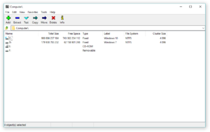

7-Zip
| This is the current revision of this page, as edited by 91.179.87.18 (talk) at 23:57, 16 March 2018. The present address (URL) is a permanent link to this version. |
| 
7-Zip File Manager on Windows 10
|
|
| Developer(s) | Igor Pavlov |
|---|---|
| Initial release | 18 July 1999[1] |
| Stable release | 18.01 (January 28, 2018) [±][1] |
| Preview release | 18.03 beta (March 4, 2018) [±] |
| Repository |
|
| Written in | C++[2] |
| Operating system | Windows, Linux, macOS, ReactOS[3] |
| Size | 1.1–1.7 MB[4] |
| Available in | 86 languages[5] |
|
[show]
List of languages
|
|
| Type | File archiver |
| License | GNU LGPLv2.1+ with unRAR restriction[6] / LZMA SDK in the public domain[7] |
| Website | 7-zip |
{kind=link}
{kind=link}
7-Zip is a free and open-source file archiver, a utility used to place groups of files within compressed containers known as "archives". It is developed by Igor Pavlov and was first released in 1999.[1] 7-Zip uses its own 7z archive format, but can read and write several other archive formats. The program can be used from a command-line interface as the command p7zip,[8] or through a graphical user interface that also features shell integration. Most of the 7-Zip source code is under the GNU LGPL license; the unRAR code, however, is under the GNU LGPL with an "unRAR restriction", which states that developers are not permitted to use the code to reverse-engineer the RAR compression algorithm.[9][10]
Contents
[hide]Formats[edit]
7z[edit]
By default, 7-Zip creates 7z-format archives with a .7z file extension. Each archive can contain multiple directories and files. As a container format, security or size reduction are achieved using a stacked combination of filters. These can consist of pre-processors, compression algorithms, and encryption filters.
The core 7z compression uses a variety of algorithms, the most common of which are bzip2, PPMd, LZMA2, and LZMA. Developed by Pavlov, LZMA is a relatively new system, making its debut as part of the 7z format. LZMA uses an LZ-based sliding dictionary of up to 4 GB in size, backed by a range coder.[11]
The native 7z file format is open and modular. File names are stored as Unicode.[12]
In 2011 TopTenReviews found that the 7z compression was at least 17% better than ZIP,[13] and 7-Zip's own site has since 2002 reported that while compression ratio results are very dependent upon the data used for the tests, "usually, 7-Zip compresses to 7z format 30–70% better than to zip format, and 7-Zip compresses to zip format 2–10% better than most other zip-compatible programs".[14]
The 7z file format specification is distributed with the program's source code, in the "doc" subdirectory.
Others[edit]
7-Zip supports a number of other compression and non-compression archive formats (both for packing and unpacking), including ZIP, Gzip, bzip2, xz, tar and WIM. The utility also supports unpacking APM, ARJ, CHM, cpio, DEB, FLV, JAR, LHA/LZH, LZMA, MSLZ, Office Open XML, onepkg, RAR, RPM, smzip, SWF, XAR and Z archives and CramFS, DMG, FAT, HFS, ISO, MBR, NTFS, SquashFS, UDF and VHD disk images. 7-Zip supports the ZIPX format for unpacking only. It has had this support since at least version 9.20, which was released in late 2010.
7-Zip can open some MSI files, allowing access to the meta-files within along with the main contents. Some Microsoft CAB (LZX compression) and NSIS (LZMA) installer formats can be opened. Similarly, some Microsoft executable programs (.EXEs) that are self-extracting archives or otherwise contain archived content (e.g., some setup files) may be opened as archives.
When compressing ZIP or gzip files, 7-Zip uses its own DEFLATE encoder, which may achieve higher compression, but at lower speed, than the more common zlib DEFLATE implementation. The 7-Zip deflate encoder implementation is available separately as part of the AdvanceCOMP suite of tools.
The decompression engine for RAR
archives was developed using freely available source code of the unRAR
program, which has a licensing restriction against creation of a RAR
compressor. 7-Zip v15.06 and later support extraction of files in the
RAR5 format.[15] Some backup systems use formats supported by archiving programs such as 7-Zip; e.g., some Android backups are in tar format, and can be extracted by archivers such as 7-Zip.[16]
File manager[edit]
7-Zip comes with a file manager along with the standard archiver
tools. The file manager has a toolbar with options to create an archive,
extract an archive, test an archive to detect errors, copy, move, and
delete files, and open a file properties menu exclusive to 7-Zip. The
file manager, by default, displays hidden files because it does not
follow Windows Explorer's
policies. The tabs show name, modification time, original and
compressed sizes, attributes, and comments (all comments for a
directory's files are stored in a text file on that directory called descript.ion, which can be edited offline).
When going up one directory on the root, all drives, removable or internal appear. Going up again shows a list with four options:
- Computer: loads the drives list
- Documents: loads user's documents, usually at
%UserProfile%\My Documents - Network: loads a list of all network clients connected
- \\.: Same as "Computer" except loads the drives in low-level NTFS access. This results in critical drive files and deleted files still existing on the drive to appear. (NOTE: Access to the active partition in low-level mode is not allowed for currently unknown reasons.)
Software development kit[edit]
7-Zip has a LZMA SDK which was originally dual-licensed under both the GNU LGPL and Common Public License,[17] with an additional special exception for linked binaries. In December 2, 2008 the SDK was placed by Igor Pavlov in the public domain.[7]
Variants[edit]
Two command-line versions are provided: 7z.exe, using external libraries; and a standalone executable 7za.exe, containing built-in modules, but with compression/decompression support limited to 7z, ZIP, gzip, bzip2, Z and tar formats. A 64-bit version is available, with support for large memory maps, leading to faster compression. All versions support multi-threading.
The 7za.exe version of 7-Zip is available for Unix-like operating systems (including Linux, FreeBSD and macOS), FreeDOS, OpenVMS and AmigaOS 4 under the name p7zip, also developed and maintained by Pavlov (7-Zip).[8]
Features[edit]
7-Zip supports:
- The 256-bit AES cipher. Encryption can be enabled for both files and the 7z hierarchy. When the hierarchy is encrypted, users are required to supply a password to see the filenames contained within the archive. WinZip-developed Zip file AES encryption standard is also available in 7-Zip to encrypt ZIP archives with AES 256-bit, but it does not offer filename encryption as in 7z archives.[18]
- Volumes of dynamically variable sizes, allowing use for backups on removable media such as writable CDs and DVDs
- Usability as a basic orthodox file manager when used in dual panel mode
- Multiple-core CPU threading[19]
- Opening EXE files as archives, allowing the decompression of data from inside many "Setup" or "Installer" or "Extract" type programs without having to launch them
- Unpacking archives with corrupted filenames, renaming the files as required
- Create self-extracting single-volume archives
- Command-line interface[20]
- Graphical user interface. The Windows version comes with its own GUI; however, p7zip uses the GUI of the Unix/Linux Archive Manager.[21]
7-zip does not provide a way to control the file order inside archives. It ignores file name order in command line. Consequently, 7-zip is not usable in cases where the order of file names is important. For example, the EPUB format, which is based on Zip and HTML formats, requires a certain order of the files in archives: a file named "mimetype" must be the first file in the ZIP archive.
Security[edit]
Self-extracting archives (including the executable installer of 7-Zip itself) are vulnerable to arbitrary code execution through DLL hijacking: they load and run a DLL named UXTheme.dll, if it is in the same folder as the executable file.[22][23][24] 7-Zip 16.03 Release notes say that the installer and SFX modules have added protection against DLL preloading attack.[25]
Reception and usage[edit]
Snapfiles.com in 2012 rated 7-Zip 4.5 stars out of 5, noting that its "interface and additional features are fairly basic, but the compression ratio is outstanding".[26]
On TechRepublic in 2009, Justin James found the detailed settings for Windows File Manager integration were "appreciated" and called the compression-decompression benchmark utility "neat". And though the archive dialog has settings that "will confound most users", he concluded that "7-Zip fits a nice niche in between the built-in Windows capabilities and the features of the paid products, and it is able to handle a large variety of file formats in the process".[27]
Between 2002 and 2016 7-Zip was downloaded 410 million times from Sourceforge alone.[28]
The software has received awards. In 2007, SourceForge.net granted it community choice awards for "Technical Design" and for "Best Project".[29] In 2013, 7-Zip received Tom's Hardware Elite award due to superiority in speed and compression ratio.[30]
See also[edit]
References[edit]
- ^ Jump up to: a b c "HISTORY of the 7-Zip". 7-Zip. 4 October 2016. Retrieved 7 October 2016.
- Jump up ^ "P7ZIP SourceForge". SourceForge.net. January 2016. Retrieved 2016-03-07.
- Jump up ^ "Tests for ReactOS 0.4.0".
- Jump up ^ "7-Zip - Browse /7-Zip/16.00". SourceForge.net. Slashdot Media. 10 April 2016. Retrieved 12 May 2016.
- Jump up ^ Options... dialog box of 7-Zip for Windows 16.00
- Jump up ^ Pavlov, Igor (2010). "7-Zip License for use and distribution". https://www.7-zip.org/. Archived from the original on 10 April 2010. Retrieved 2010-04-16. External link in
|website=(help) - ^ Jump up to: a b Igor Pavlov (2013). "LZMA SDK (Software Development Kit)". Retrieved 2013-06-16.
- ^ Jump up to: a b "P7ZIP". SourceForge.net. February 2009. Retrieved 2010-04-16.
- Jump up ^ Pavlov, Igor. 7-Zip. Retrieved 2012-10-31.
- Jump up ^ Pavlov, Igor. License. 7-zip.org. Retrieved 2012-10-31.
- Jump up ^ Diaz, Antonio Diaz. "Lzip". LZip.NonGNU.org. Archived from the original on 29 July 2010. Retrieved 29 July 2010.
- Jump up ^ Igor Pavlov. "7z Format". 7-zip.org. Retrieved 16 April 2017.
- Jump up ^ "7-Zip 2011 – TopTenREVIEWS". Archived from the original on 25 October 2012.
- Jump up ^ Igor Pavlov. "7-Zip (home page)". 7-zip.org. Archived from the original on 21 January 2002. Statement on compression performance very similar in January 2002 and April 2017.
- Jump up ^ Pavlov, Igor. "7-Zip 15.06 beta release notes".
- Jump up ^ Vijay (11 May 2013). "How to extract files from a Nandroid Backup". Ajqi.com. Retrieved 16 April 2017.
- Jump up ^ "Browse /LZMA SDK/4.23". Sourceforge. Retrieved 2014-02-12.
- Jump up ^ "AES Encryption Information: Encryption Specification AE-1 and AE-2". winzip.com. 30 January 2009, WinZip International LLC.
- Jump up ^ Atwood, Jeff. "File Compression in the Multi-Core Era". Coding Horror. Retrieved 4 August 2017.
- Jump up ^ "Command Line Syntax". sevenzip.osdn.jp.
- Jump up ^ "Command Line Syntax"
- Jump up ^ Kanthak, Stefan (8 December 2015). "Executable installers are vulnerable^WEVIL (case 7): 7z*.exe allows remote code execution with escalation of privilege". SecLists.org.
- Jump up ^ Kanthak, Stefan (22 December 2015). "Executable installers are vulnerable^WEVIL (case 14): Rapid7's ScanNowUPnP.exe allows arbitrary (remote) code execution". SecLists.org.
- Jump up ^ Hart, Jon (21 December 2015). "ScanNow DLL Search Order Hijacking Vulnerability and Deprecation". Rapid7.com.
- Jump up ^ "HISTORY of the 7-Zip". 28 September 2016. Retrieved 29 September 2016.
- Jump up ^ "7-Zip file compression tool". Snapfiles.com. WebAttack. Retrieved 2012-10-12.
- Jump up ^ James, Justin (10 November 2009). "Review: 7-Zip file compression application". Tech Republic. pp. 1–2.
- Jump up ^ 7-zip file download stats on Sourceforge.net (July 2016)
- Jump up ^ "SourceForge.net: 2007 Community Choice Awards". SourceForge.net. 2007. Archived from the original on 26 March 2010. Retrieved 2010-04-16.
- Jump up ^ "Compression Performance: 7-Zip, MagicRAR, WinRAR, WinZip". Tom's Hardware. Bestofmedia Group. 19 March 2013. p. And The Undisputed Winner Is...
External links[edit]
| Wikimedia Commons has media related to 7-Zip. |